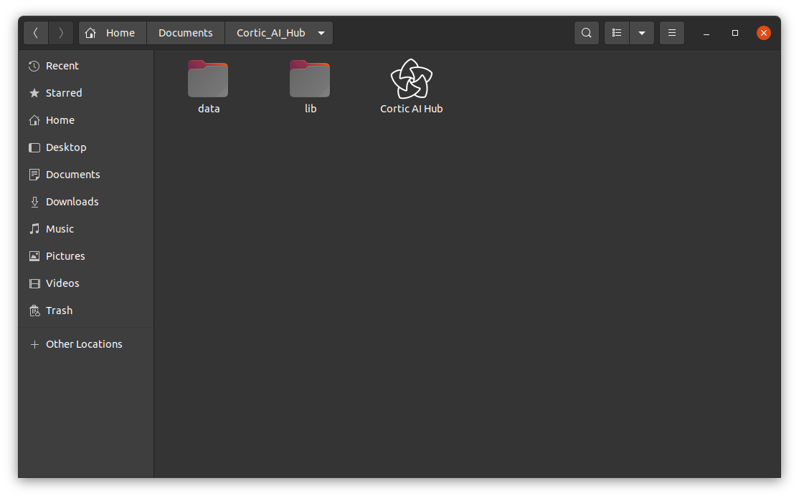

Getting Started with the Cortic Platform
Welcome to the Cortic Platform! This guide will introduce you to the platform's components and guide you through
the initial setup and installation of the Cortic AI Hub.
1. Understanding the Cortic Platform
The Cortic Platform comprises several essential components:
- Runtime: Manages system operations.
- Cortic Platform SDK: Provides the toolkit for app and service development.
- Device Manager: Handles device connectivity and management.
- Cortic AI Hub: Acts as the gateway for users to access the Cortic Platform.
2. Pre-installation Steps
Before installing the Cortic AI Hub:
- System Requirements Check:
- macOS 12.2 or higher
- Windows 11 or higher
- Ubuntu Linux 20.04 LTS or higher LTS release
- Network Configuration: Secure a stable internet connection.
- Required Dependencies:
- macOS: Install any pending software updates from the Apple Menu > System
Settings > General > Software Update.
- Windows 11: Ensure your system is up-to-date by going to Settings > Update &
Security > Windows Update.
- Ubuntu Linux: Update packages using
sudo apt -y update && sudo apt -y upgrade in the terminal.
3. Downloading the Cortic AI Hub
Visit the official Cortic Technology website to download the Cortic AI Hub.
4. Installing the Cortic AI Hub
Based on your operating system, follow the relevant steps:
- macOS: Open the downloaded .dmg file and drag the Cortic AI Hub application to the
Applications folder.
- Windows 11: Drag and drop the downloaded .exe to a folder of your choice.
- Ubuntu Linux: Drag and drop the downloaded executable to the Desktop.

5. Account Setup
After the installation of the Cortic AI Hub:
- Open the Cortic AI Hub application.
- Follow the on-screen instruction to register for a Cortic account or log in if you already have one.
6. Accessing the Cortic Platform
Once logged in, you can now access the entirety of the Cortic Platform via the Cortic AI Hub.
7. Next Steps
Now that you have successfully installed and set up the Cortic AI Hub, you can start exploring the platform and
its features:
- Explore the Store: Discover a variety of applications and extensions tailored
for the platform.
- Dive into the Cortic Platform SDK: If you're a developer, familiarize yourself with the SDK to begin
creating custom solutions.
- Check for Updates: Regularly check for software updates to ensure you're using the latest
features and security patches.
- Join the Community: Engage with other users, ask questions, and share experiences in the
Cortic community forum or discussion boards.
- Consult the Documentation: For in-depth information on any component of the platform, refer
to the official Cortic documentation.